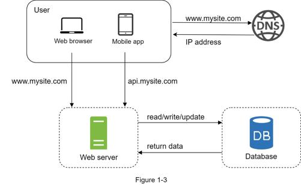

With the growth of the user base, one server is not enough, and we need multiple servers: one for web/mobile traffic, the other for the database (Figure 1-3). Separating web/mobile traffic (web tier) and database (data tier) servers allows them to be scaled independently.

You can choose between a traditional relational database and a non-relational database. Let us examine their differences.
Relational databases are also called a relational database management system (RDBMS) or SQL database. The most popular ones are MySQL, Oracle database, PostgreSQL, etc. Relational databases represent and store data in tables and rows. You can perform join operations using SQL across different database tables.
Non-Relational databases are also called NoSQL databases. Popular ones are CouchDB, Neo4j, Cassandra, HBase, Amazon DynamoDB, etc. [2]. These databases are grouped into four categories: key-value stores, graph stores, column stores, and document stores. Join operations are generally not supported in non-relational databases.
For most developers, relational databases are the best option because they have been around for over 40 years and historically, they have worked well. However, if relational databases are not suitable for your specific use cases, it is critical to explore beyond relational databases. Non-relational databases might be the right choice if:
•Your application requires super-low latency.
•Your data are unstructured, or you do not have any relational data.
•You only need to serialize and deserialize data (JSON, XML, YAML, etc.).